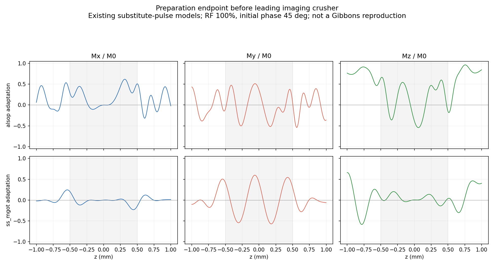
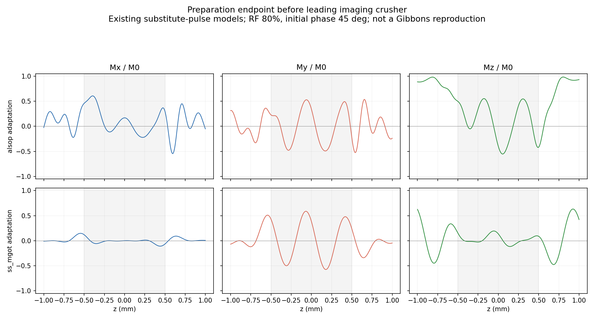
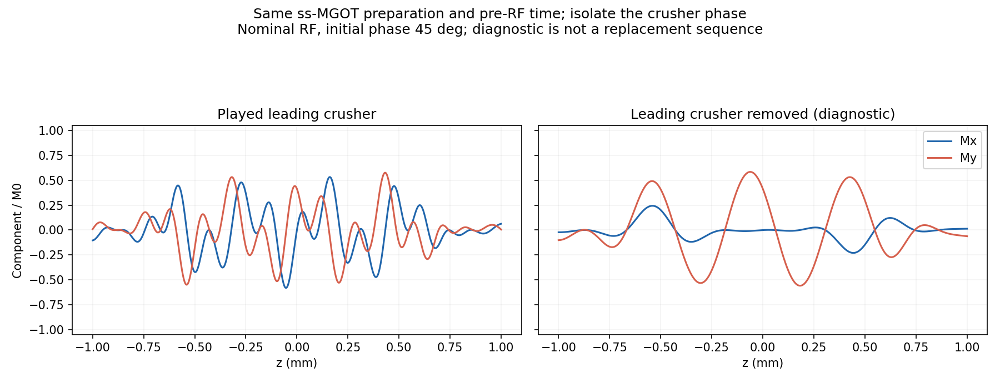
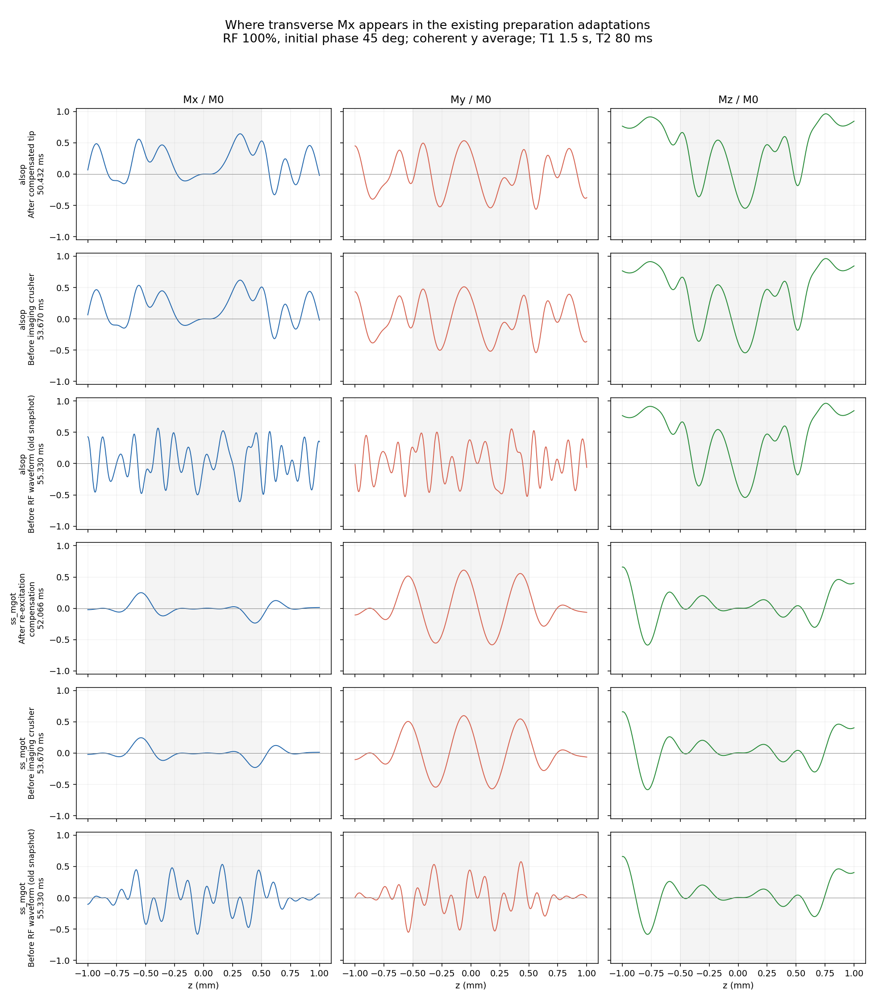
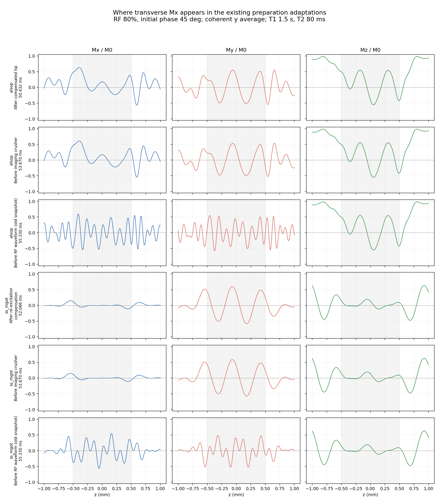

The old snapshot followed the leading imaging crusher. That gradient rotates prepared My into Mx. These diagnostic figures separate the preparation endpoint from the later pre-RF snapshot. The existing substitute pulses still leave residual Mx, so these are not exact paper reproductions.


This is a causal diagnostic, not a replacement sequence. Nominal RF, initial phase 45 degrees.


